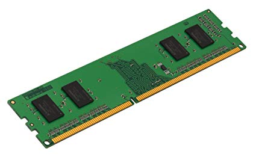
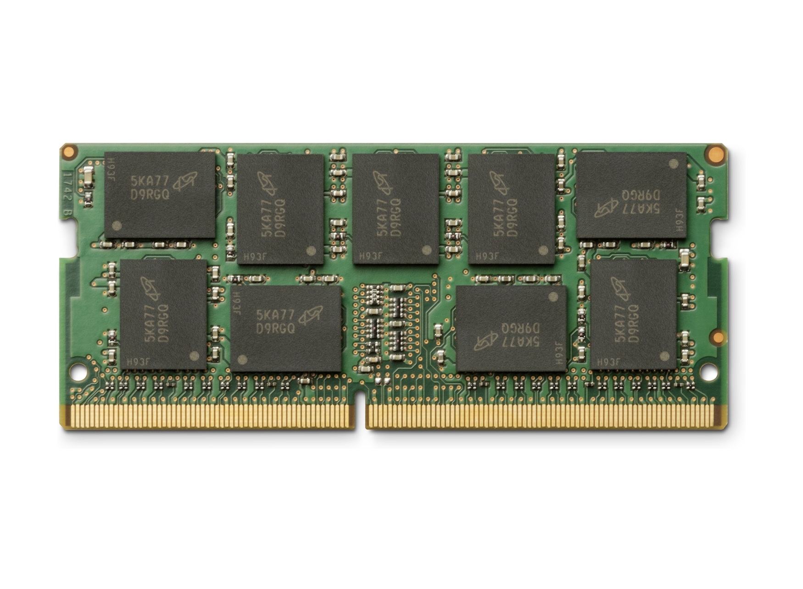

RAM |
||
|---|---|---|
| Immagini del componente | ||
|  |  | |
| Informazioni sul componente | ||
|
La RAM (Random Acess Memory) e' uno degli elementi fondamentali di un elaboratore. In questa memoria sono memorizzati tutti i dati di un programma in elaborazione, i dati di input e output e le informazioni utili alla CPU.
|
||
| Evoluzione | ||